Sistemas Operativos y Redes
Redes de Computadores
(o ¿cómo me conecto a Spotify?)
Semestre 2022-1
Cristian Ruz - cruz@ing.puc.cl
Departamento de Ciencia de la Computación
Pontificia Universidad Católica de Chile
¿Para qué me conecto a una red?
Permitir que un proceso se comunique con otro
- ¿Dónde se encuentra el otro proceso?
- Si se encuentra en la misma máquina: pipe, shared memory
- Si no, S.O. debe utilizar el sistema de Entrada/Salida
- ¿Qué medio utilizar para el envío? (Cable, aire, ...)
- ¿Cómo expresar un mensaje en ese medio? Problema Físico
- ¿Cómo se envía información por un medio de red?
- ¿Cómo se transmite el mensaje? ¿Se manda completo?
- ¿A quién se le transmite el mensaje?
- ¿Hay sólo un receptor? ¿lo estoy "gritando" a todos?
- ¿Cómo se encuentra el destinatario?
- Destinatario debe tener una dirección "única"
- ¿Cómo "encaminar" el mensaje?
- El destinatario, ¿está dispuesto a recibir el mensaje?
- Comunicación debe seguir un orden: protocolo
Red de computadores como infraestructura de conexión
Una gran red: internet
- Red como interconexión de redes
- Dispositivos de origen/destino: hosts (nodos)
- Enlaces: transmiten unidades de información
- Dispositivos de intercambio: routers, switches
- Puntos de acceso: modem, access point, cell tower
- Proveedores de acceso: ISP, Internet Service Provider
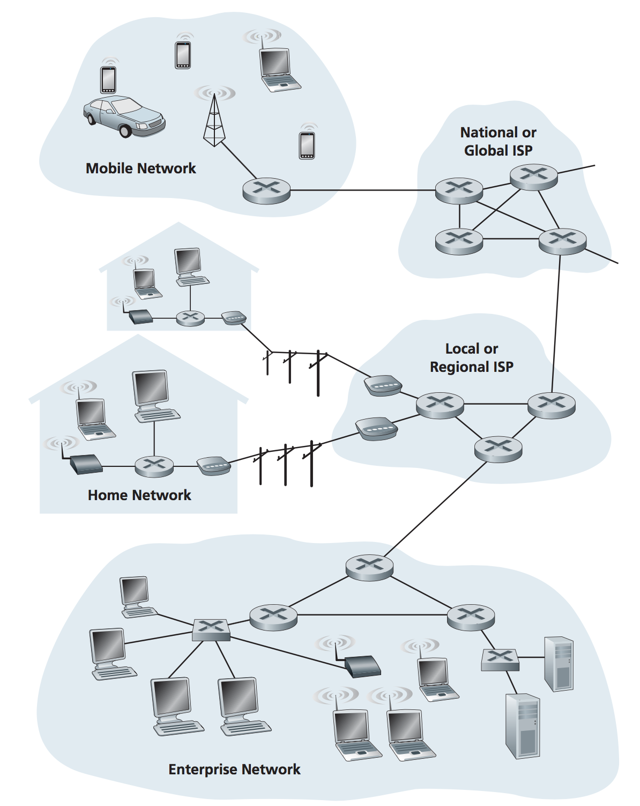
Protocolo: conjunto de reglas
¿Quién inicia la comunicación?
¿Cuándo se inicia la comunicación?
- Orden de mensajes
- Formato de mensajes
- Acciones ante cada mensaje
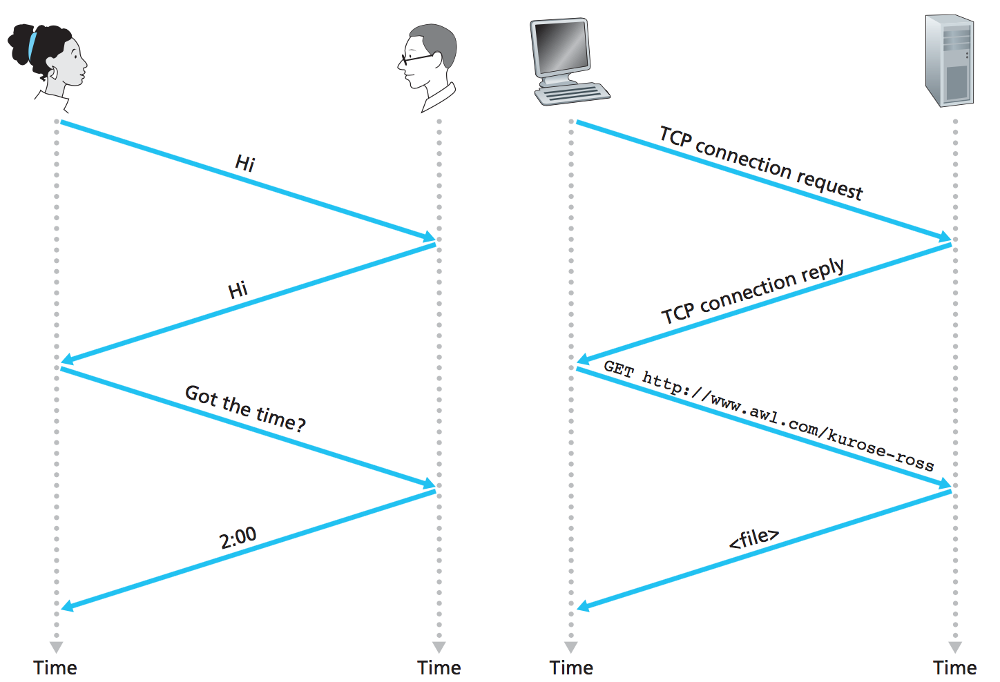
Internet
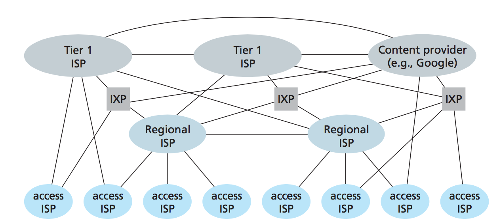
http://www.submarinecablemap.com/http://www.internetexchangemap.com/
Internet
http://www.submarinecablemap.com/http://www.internetexchangemap.com/
https://www.mapbox.com/labs/twitter-gnip/brands/#3/26.35/-20.21
https://whatismyip.com/
Map of the Internet
Mapa Internet Chile
Organización de redes
Modelo OSI
Modelo ISO OSI (Open Systems Interface)
- Propuesto en 1983 por Day y Zimmerman, revisado en 1995
- Modelo de referencia
- Define responsabilidades para cada capa
- No define estándares, ni protocolos, ni implementaciones
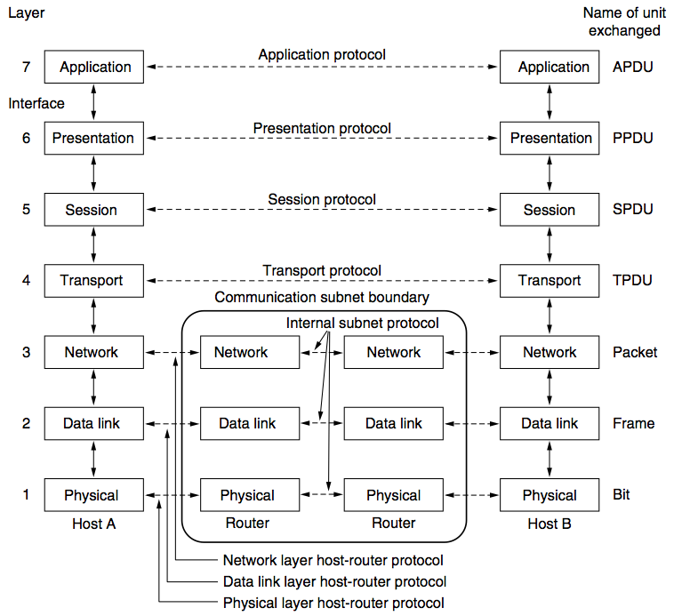
Modelo Internet
Originado como stack de protocolos para ARPANET, proyecto de investigación del DoD
- Propuesto por Vinton Cerf y Robert E. Kahn, 1974
- Estandarizado en 1989
- También llamado stack TCP/IP
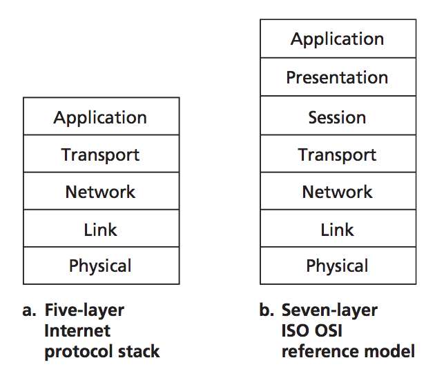
Capa de Aplicación
Comunicación entre procesos (aplicaciones)
Aplicaciones intercambian mensajes
- HTTP (HyperText Transfer Protocol)
- SMTP (Simple Mail Transfer Protocol)
- FTP (File Transfer Protocol)
- DNS (Domain Name Service)
- IMAP (Internet Message Access Protocol)
- SSH, DHCP, POP, Telnet, XMPP, …
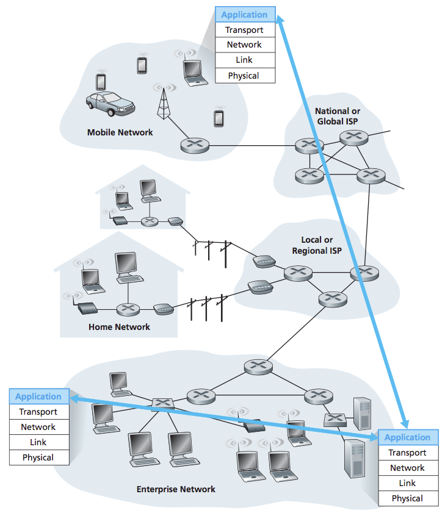
Capa de Transporte
Transporte de mensajes entre origen y destino
Mensaje de capa de aplicación se transmite en segmentos
- TCP (Transport Control Protocol)
- Servicio connection-oriented/
- Garantías de entrega (reliable)
- Control de flujo
- Control de congestión
- UDP (User Datagram Protocol)
- Servicio connection-less/
- Sin garantías de entrega
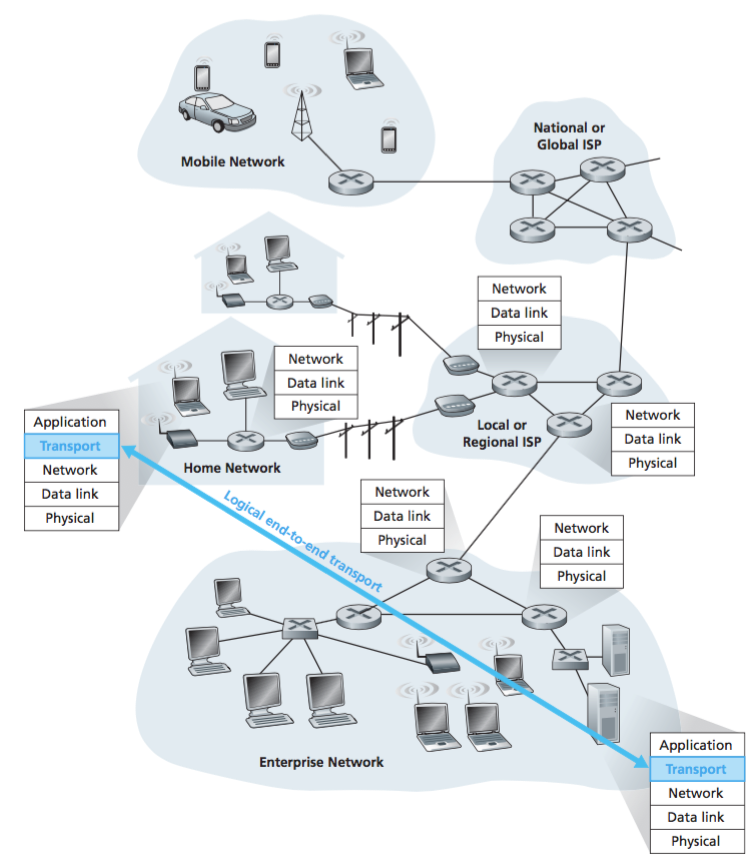
User Datagram Protocol
- Servicio de "mejor esfuerzo" (best-effort).
- Segmentos pueden perderse.
- Segmentos pueden llegar en distinto orden.
Servicio no orientado a conexión (connection-less)
- No se establece conexión previa
- No mantiene estado de conexión
- Cada segmento se gestiona de manera independiente
Segmento UDP solo tiene 8 byte de overhead
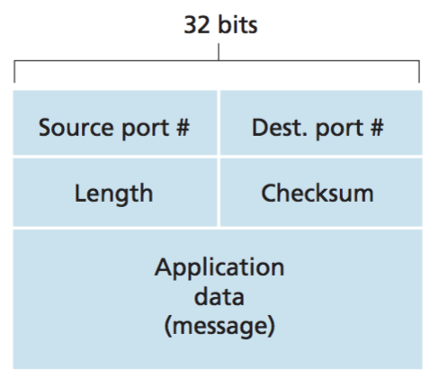
Transport Control Protocol
- Protocolo de transmisión fiable
- Control de flujo
- Buffer en emisor y en receptor
- Orientado a conexión
- Protocolo de establecimiento de conexión (handshake) antes de enviar paquetes de datos
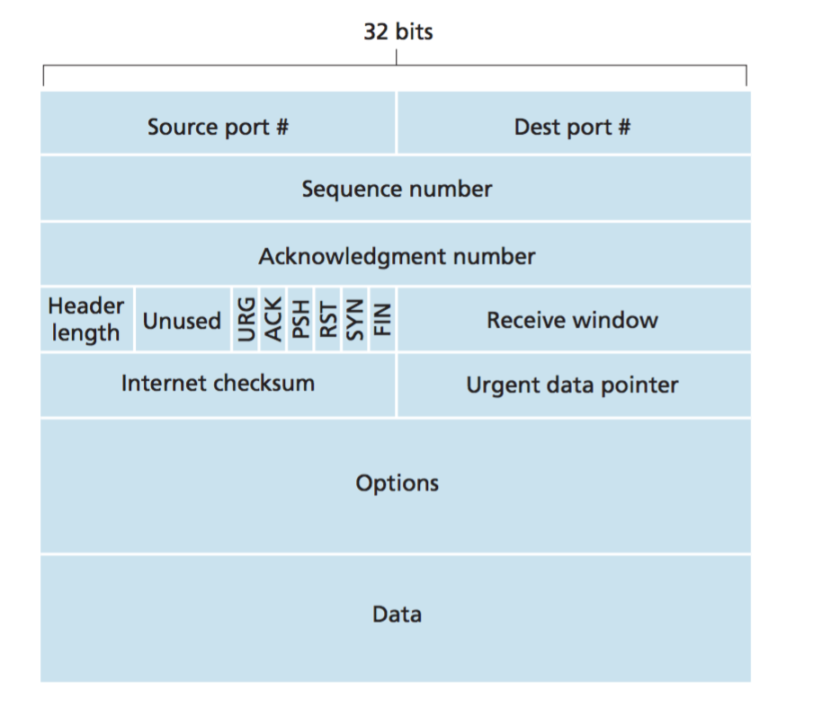
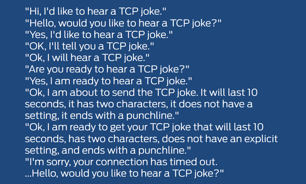
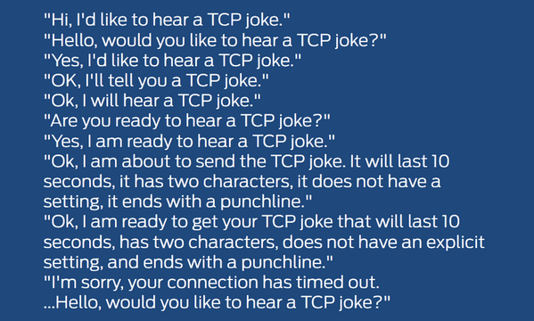
Capa de Red
Transporte de segmentos entre par de hosts
Segmentos se transmiten en forma datagramas (paquetes)
- Servicio de entrega desde origen a destino
- Búsqueda de destino en la red
- Encaminamiento (routing) de segmento
- IP (Internet Protocol)
- Implementado en origen, destino, y nodos intermedios
- Hardware: router
- IPv4, IPv6
- ICMP (Internet Control Message Protocol)
- Mensaje de control (ping, trace, echo)
- IGMP, OSPF
- Protocolos entre routers
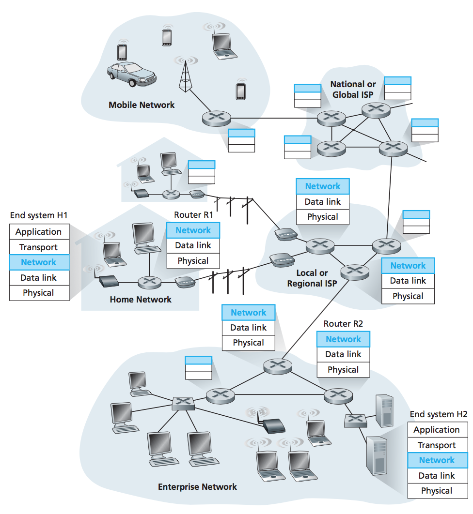
Capa de Enlace (link)
Transmisión de paquetes en cada enlace
Paquetes se transmiten en cada par de hosts de acuerdo a las características del enlace
Paquetes de capa de enlace se conoce como frames
- Pueden proveer transmisión confiable (reliability)
- Pueden proveer control de errores
- Control de acceso al medio, Medium Access Control (MAC)
- Ethernet, IEEE 802.3
- Wi-Fi, IEEE 802.11
- Hardware: switch, hub
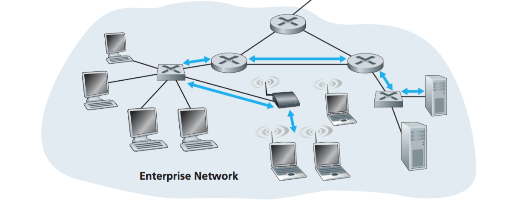
Capa Física
Transmisión de frames en cada enlace
Transmisión de bits a través de un medio
Protocolos para cada medio de transmisión
- UTP (par trenzado de cobre)
- Cable coaxial
- Fibra óptica
- Medio inalámbrico
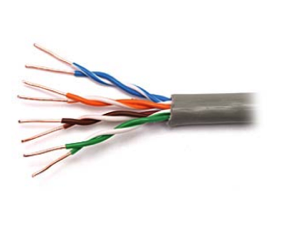
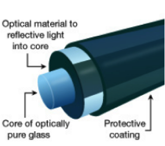
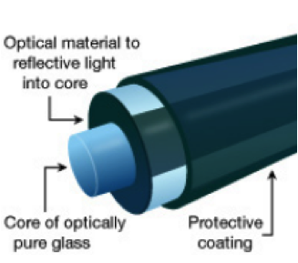
Encapsulamiento
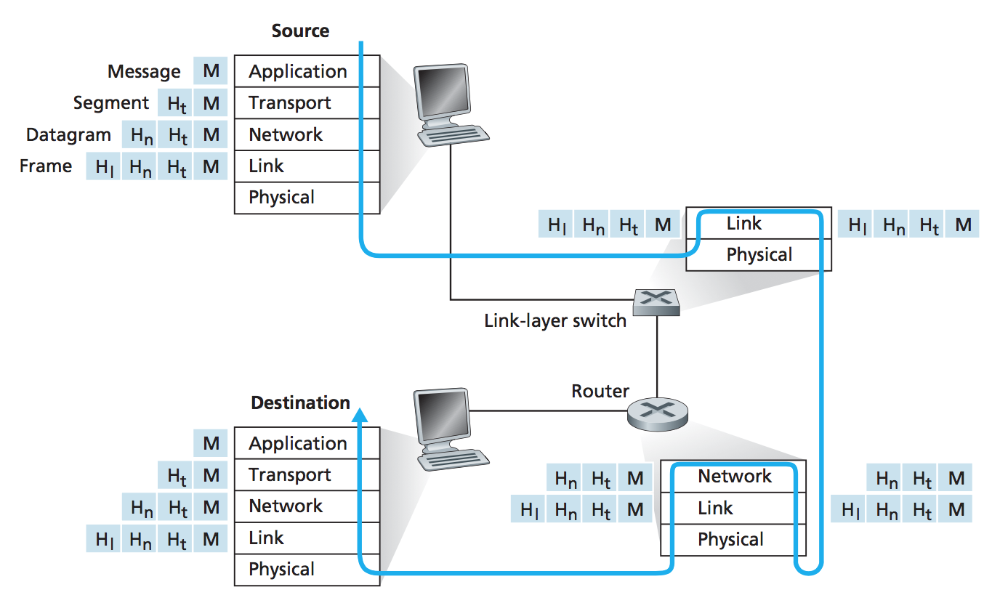
Funcionamiento del modelo de capas se basa en encapsulamiento de mensajes
- Capas agregan y remueven encabezados (headers)